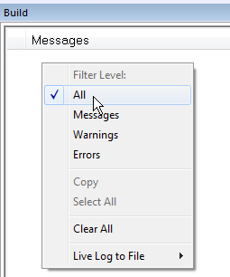
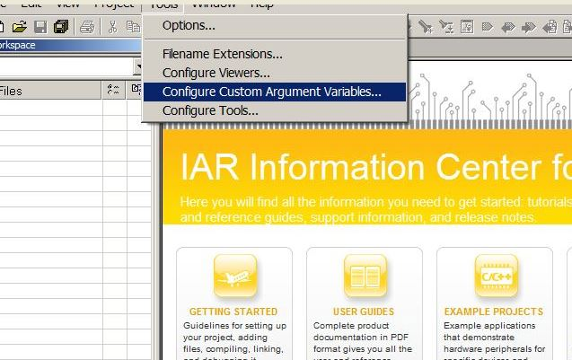
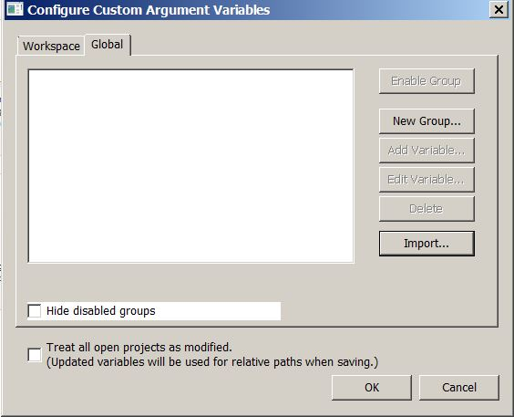
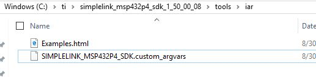
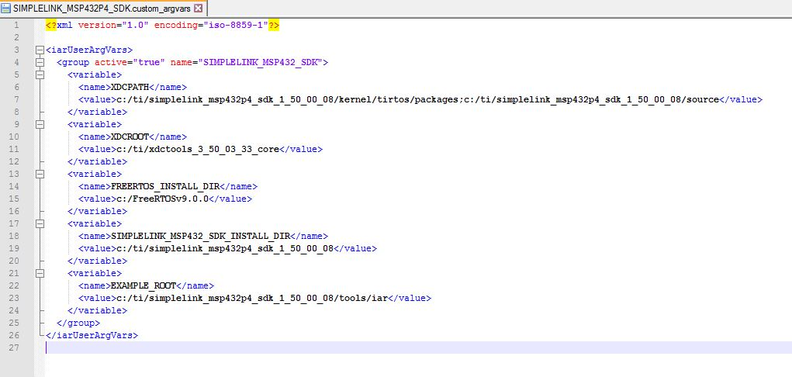

TI 15.4-Stack Quick Start Guide¶
This section serves as a road map for users developing applications and products using the TI SimpleLink CC26x2 wireless MCU platform for TI 15.4-Stack applications. Whether a seasoned developer or just getting started, TI has created a variety of resources to simplify development on the CC26x2 platform. These resources will enhance your experience with the SimpleLink TI 15.4-Stack from the out-of-the-box demo to production.
Figure 39. shows the suggested workflow for getting started with TI’s SimpleLink TI 15.4-Stack development environment.

Figure 39. Suggested Workflow
Using TI 15.4-Stack Projects with CCS¶
Importing TI 15.4-Stack projects into CCS will also import a README.html that
details the example application design, steps on running the example, and how
each example works.
Projects that contain the TI Over-the-Air Download (OAD) Profile will also import the Boot Image Manager (BIM) into the workspace. For more information on TI OAD and the BIM see the TI 15.4-Stack Users Guide.
For more details on TI 15.4-Stack example application please see the TI 15.4-Stack Users Guide.
Import Project Using Resource Explorer¶
A quick and easy way to start working with the SDK is to use the TI Resource Explorer in CCS.
This section describes how to import and build an existing project and references the sensor project. All of TI 15.4-Stack projects included in the development kit have a similar structure.
Open the CCS IDE from the Start Menu.
Create a workspace.
Attention
Ensure that the CCS workspace path does not contain a whitespace.
Import a CCS Project using Resource Explorer
- Open Resource Explorer (if not open already) View -> Resource Explorer - Navigate to the CCS folder for your chosen example: Software -> SimpleLink CC26x2 SDK -> Examples -> CC26x2_LAUNCXL -> ti154stack -> sensor -> TI-RTOS -> CCS Compiler -> sensor
Select the CCS Logo button to import project into Project Explorer
Attention
The import process will also install the SimpleLink CC26x2 SDK if a local version does not exist. You must accept the End User License Agreement to proceeed.

Figure 40. Install SimpleLink CC26x2 SDK
After the installation finishes, you must reopen CCS before importing the project.
- If everything is successful, the project should appear in Resource Explorer.
Import Project Using Import Wizard¶
Open CCS
Choose Project -> Import CCS Projects from the menu.
Select the Browse button in the Import CCS Projects dialog and select the the directory
<SDK_INSTALL_DIR>/examples
Figure 41. CCS Import Wizard
CCS discovers both CCS and GCC based examples.
Select the TI 15.4-Stack Example Project you would like to use. In this example,
sensor_cc1310lpis chosen. Click Finish to import thesensor_cc1310lpproject.
Build and Download Project¶
To build & download the sensor project:
Build the Sensor project.
- Set the Sensor project as the active project. Make sure the Debug project configuration is used.
- Select Project -> Rebuild to build the sensor project.
Load the Sensor project
- Select Run -> Debug to download the sensor application.
- Once the debugging session starts, click the red stop button
Before beginning execution, open a terminal window with the following settings:
UART Param Default Values Baud Rate 115200 Data length 8 bits Parity None Stop bits 1 bit Flow Control None
When the debugging session opens, click the Green start button to start
execution. Continue on to the README.html for information about using the
example application.
Using TI 15.4-Stack Projects with IAR¶
When building with IAR, it is recommended to enable all build messages. This can be done by right-clicking in the Build window and selecting “All” as shown below:
Figure 42. Enable All Build Messages
Before starting to work with any of the TI 15.4-Stack projects in the SDK, you need to load a set of variables that will be set for your current workspace.
Select Tools -> Configure Custom Argument Variables
Figure 43. Configure Custom Argument Variables
Select the Global tab, then click Import..
Figure 44. Import Global Argument Variables
3. Import the custom argvars from the SDK. The argvars are stored in a SIMPLELINK_CC13XX_CC26XX_SDK.custom_argvars file, which is located in the
tools/iar directory of the SDK
(<SDK_INSTALL_PATH>/tools/iar/SIMPLELINK_CC13XX_CC26XX_SDK.custom_argvars)
Figure 45. Custom Argvars Location
4. You can open
(<SDK_INSTALL_PATH>/tools/iar/SIMPLELINK_CC13XX_CC26XX_SDK.custom_argvars)
in a text editor if you need to modify the default path argument variables.
Figure 46. Default Path Argument Variables
- Restart IAR
Import Project Using Workspace¶
This section describes how to open and build an existing project and references the Sensor project.
Open the IAR Embedded Workbench IDE from the Start Menu.
Open an IAR workspace project: File -> Open -> Workspace…
- For this example, select” <SDK_INSTALL_DIR>\examples\rtos\CC26x2_LAUNCHXL\ti154stack\sensor\tirtos\iar\sensor_CC26x2.eww
This workspace file is for the sensor project. When selected, the files associated with the workspace become visible in the Workspace pane on the left side of the screen.
Build and Download Project¶
To build & download the Sensor Project:
Build the Sensor project.
- Set the Sensor project as the active project. Make sure the Debug project configuration is used.
- Select Project -> Make to build the Sensor project.
Load the Sensor project
- To download without debugging: Select Project -> Download ->
- Download Active Application
- When the download process is complete, you will see a message that the .out file was downloaded to flash memory in the Debug Log.
Before beginning execution, open a terminal window with the following settings:
UART Param Default Values Baud Rate 115200 Data length 8 bits Parity None Stop bits 1 bit Flow Control None
When the debugging session opens, click the start button to start execution.
See the README.html or TI 15.4-Stack Users Guide for information
about using the Sensor project.
Running the Demo¶
For information on running any of the TI 15.4-Stack example applications please refer
to the README.html imported with the example application.
Learning More About TI 15.4-Stack¶
Resources contained in the Learn track of Figure 39. are intended for users who are new to TI 15.4-Stack or TI-RTOS. These modules demonstrate how to create custom applications with TI 15.4-Stack and TI’s Real Time Operation System (TI-RTOS).
- SimpleLink Academy Project Zero
Contains TI-RTOS modules written to demonstrate the rich debug environment and peripheral driver capability provided by the RTOS.
- TI-RTOS Kernel Workshop www.training.ti.com/ti-rtos-kernel-workshop
This material teaches users who are new to TI-RTOS or any RTOS programming in general about TI’s RTOS kernel implementation.
Modules within the kernel training greatly expand the information presented in the TI 15.4-Stack Users Guide.
Learn how the TI-RTOS provides the most optimal power management and design flexibly.
Developing a New TI 15.4-Stack Based Application¶
The develop track of Figure 39. is intended for programmers who are ready to start developing an end product using TI 15.4-Stack. To begin:
- Download the Simplelink SDK SIMPLELINK-SDK TI 15.4-Stack contains the code neccessary to create a complete IEEE 802.15.4g compliant application. The stack library code implements the IEEE 802.15.4g protocol stack, and the various example projects use the stack library to implement end devices. These examples should be considered as starting points for end product designs.
- Get Familiar with the User’s Guide This User’s Guide is meant to be used alongside the TI 15.4-Stack when developing an end product. It contains documentation on the stack architecture, APIs, and suggestions for developing applications. To jump to the Table of Contents, click here: TI 15.4-Stack Users Guide.
- Select an Example Project The TI 15.4-Stack includes a basic set of projects to use as a starting point for development of your custom application. TI recommends that users start their development on a project starting the Collector and Sensor example applications. For more details on these and all other included projects, see the TI 15.4-Stack Users Guide.
- Begin Development with an IDE An Integrated Development Environment can be set up to make it easier to browse through the relevant projects and view code. All embedded software is developed using TI’s Code Composer Studio on a Windows 7 or later PC.
- Troubleshooting Help While developing your custom application, you may run into issues that require the use of a debugger. The TI 15.4-Stack Users Guide provides help with configuring your debugger and understanding common problems. If you are still having problems after reading through the Debugging chapter, see the Getting Support track for more options.
Enhance Your Project¶
The enhance track of Figure 39. is intended to take your product to the next level by leveraging TI’s web-based collateral. Additional resources found in these pages include application-specific source code examples and complete sub-system designs.
- TI Designs™ http://www.ti.com/tidesigns
Examples of system designs containing complete hardware and software examples, using TI 15.4-Stack.
Getting Support¶
The support track of Figure 39. is intended to provide you additional help and resources that aren’t contained in the previous tracks.
- TI 15.4-Stack-Wiki www.ti.com/ti154stack-wiki
A collection of webpages that contain step-by-step guides and code snippets that enable certain features and enhancements to TI 15.4-Stack, such as production test mode and certification.
- E2E Forums www.e2e.ti.com
A support community providing answers to questions relating to the TI 15.4-Stack. You can browse questions from other developers or ask your own questions if you run into issues developing with the TI 15.4-Stack.